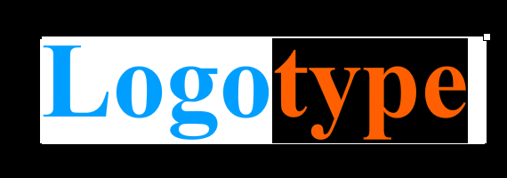

В этом уроке мы создадим эффект блика на логотипе. А для этого воспользуемся средствами маскирования слоёв во Flash.
Вот, что должно получиться в результате:
Такой эффект возможен благодаря особому типу слоя: слой-маска.
Но вначале создадим основу логотипа. Создадим текстовое поле и наберём текст логотипа. Я выбрал шрифт с засечками, чтобы блик получился натуральнее.
Создадим новый слой и нарисуем высокий, но узкий прямоугольник.
Для цвета выберем градиентную заливку в соответствующем окне ( + ). Я выбрал переход из белого в белый. Но для одного из цветов установил нулевую прозрачность. Это наш блик, который мы будем перемещать над текстом логотипа.
Один из краев получился довольно резким. Мы можем сменить тип Overflow у градиента, и уменшить его ширину специальным инструментом Gradient Transform Tool ( ). Таким образом получится размытая заливка блика: от прозрачного до непрозрачного, до, вновь, прозрачного (Alpha: 0% — 100% — 0%).
Можно повернуть наш блик на небольшой угол ( ). Расположим его с правого края текста. На временной линии (timeline) для обоих слоёв добавим несколько десятков кадров ( ). На кадрах верхнего слоя с бликом создадим анимацию движения (Create motion tween). Вставим ключевой кадр в конец этой групы кадров ( ) и переместим блик за левый край надписи. Сейчас можно проверить результат нажав клавишу .
Теперь добавим новый слой, который будет служить маской. Маска необходима, чтобы блик был виден только над нужной нам областью логотипа. Первый блик на моём готовом примере виден только на узкой кромке текста. Для этого необходимо проделать несложные манипуляции над контуром текста.
Выделим самый нижний слой с текстом логотипа и скопируем текстовое поле. Теперь выделим самый верхний слой — наша будущая маска. Вставим текстовое поле точно в то же место, где был оригинал (комбинация клавиш + + ). Сейчас цвет и прозрачность текста не имеет значения — Flash проигнорирует их. Для изменения контура текста сейчас необходимо дважды «разбить» эту групу контуров (комбинация клавиш + ) .
Теперь скопируем полученые контуры и вставим в то же место. Важно раньше времени не снимать выделения. Передвиньте контуры на несколько пикселей, например, влево. Удобно воспользоваться стрелками на клавиатуре. Поменяйте цвет заливки, в окне свойств ( + ), на любой отличающийся. Теперь неоходимо снять выделение. В итоге произойдет вычетание верхнего контура из нижнего. Чтобы убедится в этом, выделим верхний «полноценный» контур текста и удалим его. Останутся только узкие области кромки текста.Теперь осталось нажать правой клавишей мыши на название верхнего слоя. В этом контекстном меню сменим тип слоя на «Маска». В этот момент, автоматически, нижележащий слой свяжется со слоем-маской, и оба они заблокирутся. Пока эти слои заблокированы, результат маскирования видно прямо на рабочей области. Можно проверить результат нажатием + .
P.S. Подобный эффект можно достичь средствами CSS.